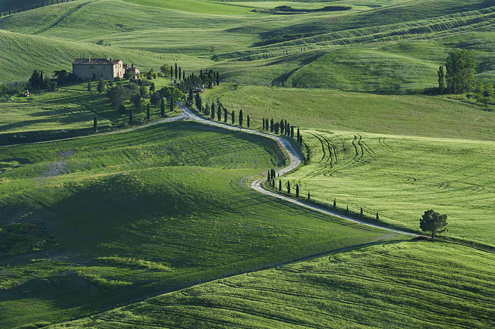
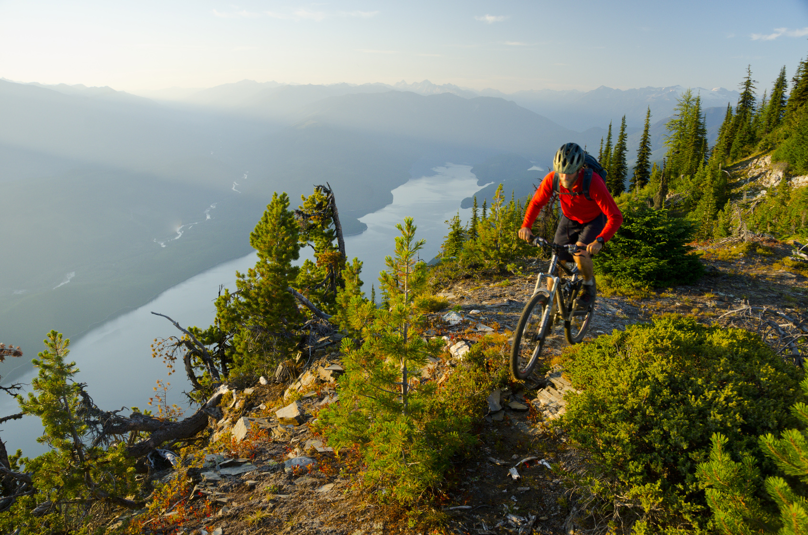

The Surly Long Haul Trucker weighed 23 kilograms loaded. I know because I weighed it in the car park in Saint-Jean-de-Maurienne on a borrowed luggage scale and then stood there doing math that I didn't like. My own body weight plus the bike plus the bags equalled something that felt, pushing up the first ramp of Col du Telegraphe at 7 a.m. on a Tuesday in August, like a serious personal failing.
This is the honest beginning of the six-day alpine route that connects Saint-Jean-de-Maurienne to Briançon via the three great passes of the Route des Grandes Alpes. Nobody tells you about day one. Everyone talks about Galibier.
Day 1: The Telegraphe
Col du Telegraphe sits at 1,566 metres — modest by Alpine standards, significant when you're carrying four Ortlieb panniers and a bivouac setup. The climb is 11.8 km at an average 7.1% gradient. In the Tour de France, riders do it before Galibier without stopping, as a warmup. With luggage, it takes the better part of three hours and requires a recalibration of what "difficulty" means.
Valloire, in the valley between Telegraphe and Galibier, has a café that opens at 8 a.m. I arrived at 10:30. The patron looked at the bike, looked at the panniers, looked at me, and brought out a plate of bread and butter without being asked. That café stop, which lasted forty minutes, is one of my clearest memories of the entire trip.

Day 2: Galibier
Col du Galibier at 2,642 metres is not the highest pass on this route but it is the most famous, and the fame is earned. The final four kilometres above the Lautaret junction are on exposed terrain above the treeline, switchbacking up a stone face with nothing to stop the wind and nothing to stop you looking back down the valley and feeling small in a way that feels good rather than frightening.
There is a café at the summit. It serves hot chocolate that costs an unreasonable amount and tastes better than any hot chocolate I have ever had anywhere. I sat outside in a fleece and base layer — it was 7°C at the top even in August — and watched other cyclists arrive at the summit. Everyone, without exception, did the same thing: stopped, looked around, and went very quiet for a minute.
Day 3: Descent and Recovery
The descent from Galibier to Briançon via Col d'Izoard (I did this over two days) should be celebrated more than the climbs. Forty kilometres of switchbacks, 1,800 metres of elevation loss, hands on the brakes the whole way. With panniers the bike behaves differently downhill — slower to respond, more committed to its trajectory, requiring more anticipation. I reached Briançon in the late afternoon and ate an enormous pizza and went to bed at 9 p.m.
Day 4: Col d'Izoard
Izoard is the character in this story. Galibier is the famous one. Telegraphe is the test. But Izoard — 2,360 metres through the Casse Déserte, a moonscape of eroded limestone and orange scree — is the one that stays with you. The top section looks like it belongs in Utah, not the French Alps. It feels isolated in a way the other passes don't, partly because the approach from Guillestre is less traveled, and partly because the terrain is genuinely strange.
Day 5: The Quiet Valleys
Day five was the valley day. No major pass. Just riding through Queyras Natural Park on roads that see almost no cars, past stone villages with working fountains and cats sleeping on walls. This was, unexpectedly, the day I liked most. The drama of the high passes is memorable, but this — pedaling quietly through a warm afternoon, thighs still burning from four days of climbing, no schedule, no urgency — was the day I understood what bicycle touring actually is.
Day 6: Into Briançon
The final day was a short ride back into Briançon, the highest city in Europe at 1,326 metres. I spent the morning in the old walled town, eating a proper breakfast and reading, and caught the afternoon train back. The bike barely fit in the luggage area. A family at the next table asked if I'd come far. I said six days through the Alps. The child, who was about eight, looked at the bike and then at me and said "that's a lot of bags." It was the most accurate thing anyone said to me the entire trip.
Loaded Bike Handling: What Nobody Tells You
Touring with front and rear panniers is a different physical discipline from unloaded road cycling, and the difference is not just in the legs. The steering is heavier. The bike resists quick changes of direction. On steep descents with switchbacks, you need to start braking much earlier than instinct suggests — loaded bikes carry momentum into corners in a way that becomes alarming if you let the speed build on the approach. I nearly came off on a hairpin below Galibier on day two, not from speed but from overconfidence after a clean morning of climbing. Downhill loaded is harder than uphill.
Mechanically, the trip was clean except for two broken spokes on the rear wheel, which isn't surprising given the load and the road quality in sections of the Queyras. I carried four spare spokes, which was exactly right. A wheel that starts wobbling 40 km from the nearest town on a loaded bike is a genuine problem. Know how to replace a spoke or carry enough spares to make it to help.

The Casse Déserte at Last Light
I've mentioned Izoard's strange upper section — the Casse Déserte — but the landscape deserves more than a paragraph. It is genuinely unlike anything else on this route, or anywhere else I've cycled in Europe. The eroded limestone pinnacles, called demoiselles coiffées, rise from orange and grey scree at angles that suggest the mountain is in the process of collapsing. Nothing grows up there. The road passes through it in a series of long exposed traverses where the wind comes straight down the valley unimpeded.
I reached the Casse Déserte in late afternoon on day four, heading south, with the sun low enough to throw long shadows across the scree. Two other cyclists were stopped on the shoulder taking photographs. Nobody spoke. There wasn't anything to say. The landscape had its own argument to make and it didn't need commentary. I ate a bar and kept moving and looked back three times before the road curved and it disappeared.
What We Carried
- Steel touring frame (chromoly, 700c) with wide 38mm tyres for rough descents
- Ortlieb Back-Roller Classic panniers, pair (rear) — 40L total, waterproof roll-top
- Ortlieb Front-Roller Plus panniers, pair (front) — 25L total
- Three-season down sleeping bag in 10L dry bag, rated to 0°C
- Bivy shelter (tarp-style, single pole) — 620g, emergency and planned wild camping
- Multi-tool with spoke wrench, chain tool, and tyre levers
- Patch kit plus two spare inner tubes (700x38c)
- Four spare spokes sized to the rear wheel, pre-bent to fit panniers
- 2L soft flask plus 1L hard-sided Nalgene — high passes have no reliable water
- Lightweight down jacket (150g) for summit stops — 7°C at Galibier even in August